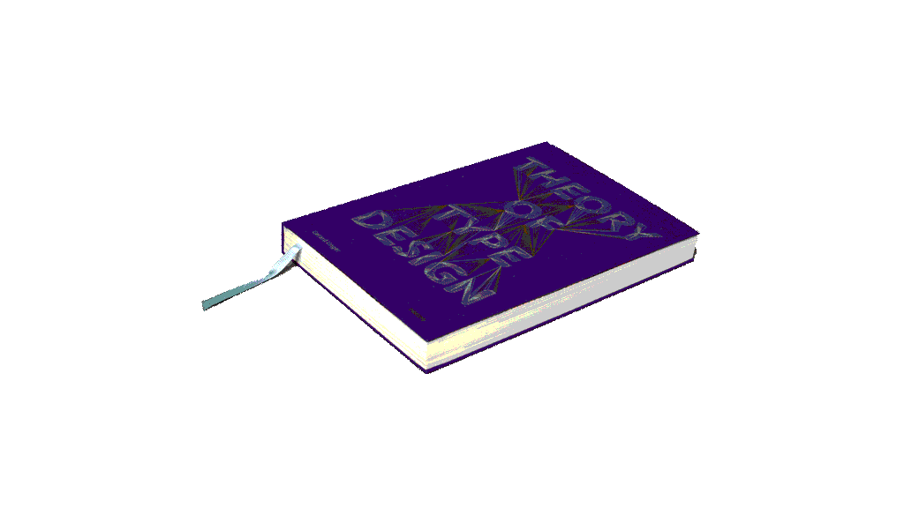
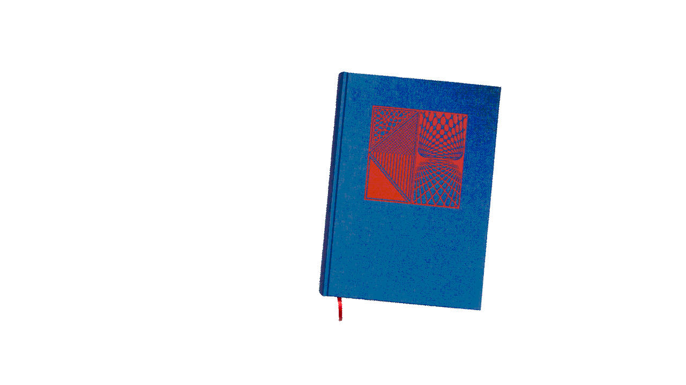
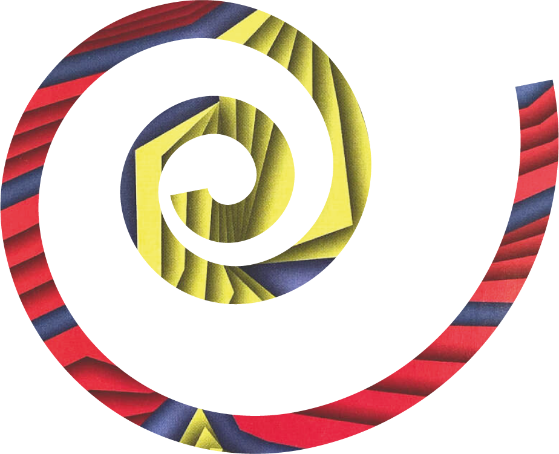
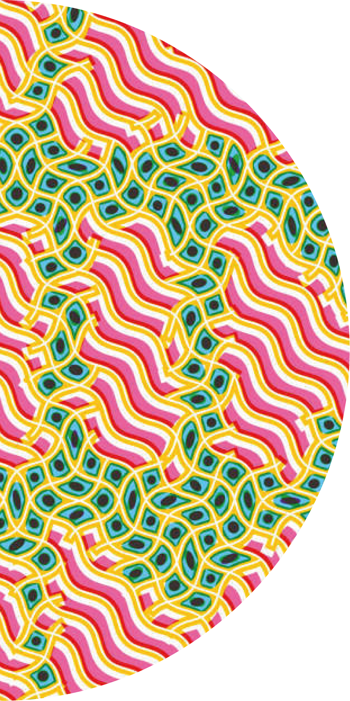

There are many ways
to look at the work of
Hansje van Halem
yesss
mesmeric surfaces, youror you can pick up the echoes of other periods in the history of graphic art, such as Op Art
and West Coast Psychedelia.
kaleidescope stamps for PostNL
Yet
editorial illustrations for Dutch newspaper,
another approach is to try and uncover its origins, which reveal that Van Halem’s visual tapestries are nothing less than full page extensions of the Dutch designer’s major obsession:
Even when scrolling down the
home page of her website, as her earlier works
appear, you can see the gradual movement of
her attention away from character design
towards pattern and surface.
When I started drawing
letters, I was more interested in their
texture and not so much bothered with their
outline. I tried to let the drawing
system of the
texture determine the outline of the shape as far
as legibility allowed it. At a certain point I was
not bothered with legibility and let the drawing
system take over the whole page.
aaaaa
studies, the late Gerard
Van Halem worked closely with Unger on the design of his final book Theory of Type Design.
She documents this evolution in Sketches, a compilation of self-generated and commissioned drawings published in 2013.



ala
continue to apply her pattern work to designer fabrics and, perhaps, banknotes someday.
aaaala
kind of designer who invests a huge amount of her time exploring the potential of ideas –In Van Halem’s case, these archived, partially developed ideas often re-emerge later to become the basis of new projects. Some of them can be seen in her 2013 Sketchbook.
Such is the case with the Lowlands Festival in the Netherlands, for which she has designed the identity since 2017. Just van Rossum designed a programme that enabled her idea to be transformed into a tool that she and her team (Marjolein Rinckes, graphics, Jurriaan Hos, animation) could use for a wide variety of static and moving applications. This example also shows how a very personal approach such as hers can evolve into a collaborative project, on a larger scale.

‘As a solo designer I am constantly wondering if I should expand as a studio. For me, Lowlands became a great example of how growing my practice does not necessarily lead to a “top-down” company.’
aalla
Halem has collaborated with publisher and printer Uitgeverij De Buitenkant,‘I like to dig deep into the technical aspects of a certain kind of output and let those parameters decide which direction the design goes. If you compare the text memorial I designed in Amsterdam with the book design for Gerard Unger’s Theory of Type Design, I am happy that they are as much connected as they are different.’
